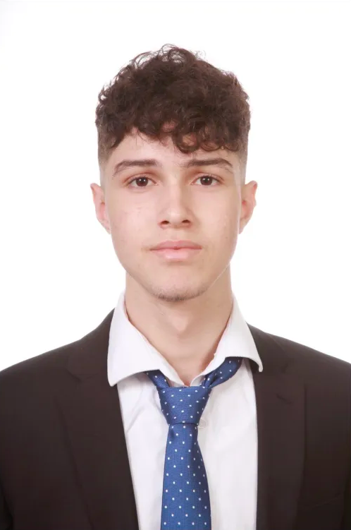

Sobre mí
Me llamo Roberto González Cruz y actualmente estoy cursando el ciclo de Sistemas Microinformáticos y Redes en el IES Ana Luisa Benítez. Soy una persona proactiva, con ganas de aprender y crecer dentro del mundo de la informática. Durante mis prácticas en la Fundación Sergio Alonso tuve la oportunidad de enseñar robótica en distintos centros educativos y participar en el Makeathon 2026, una experiencia que me ayudó a desarrollarme tanto a nivel técnico como personal. Me adapto rápido a nuevos entornos y siempre busco dar lo mejor de mí en todo lo que hago.
Formación
- 2024 - 2026: CFGM 1º y 2º SMR (Sistemas Microinformáticos y Redes) — IES Ana Luisa Benítez
- ESO — CEIPS San Miguel Arcángel
Competencias
- Buena comunicación
- Paciencia y resiliencia
- Resolución de problemas
- Dominio del paquete Office
- Agilidad con los resultados
- Experiencia en atención al público
- Trabajo en equipo
Idiomas
- Castellano: Nativo
- Inglés escrito: Nivel medio